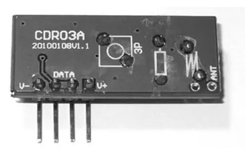
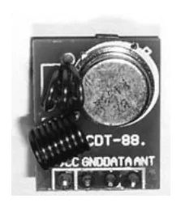

It’s easy to send text information in one direction using a wireless link between two Arduino-controlled systems that have inexpensive radio frequency (RF) data modules, such as the transmitter module shown in Figure 14-1. These modules are usually sold in pairs and are known as RF Link modules or kits. Good examples are part WLS107B4B from Seeed Studio and part WRL-10534 from SparkFun. We’ll use the most common module types that run on the 433 MHz radio frequency in our projects.
The connections shown at the bottom of the module in Figure 14-1 are, from left to right, 5 V, GND, data in, and an external antenna. The antenna can be a single length of wire, or it can be omitted entirely for short transmission distances. (Each brand of module can vary slightly, so check the connections on your particular device before moving forward.)
Figure 14-2 shows the receiver module, which is slightly larger than the transmitter module.


The connections on the receiver are straightforward: the V+ and V− pins connect to 5 V and GND, respectively, and DATA connects to the Arduino pin allocated to receive the data.
Before you can use these modules, you also need to download and install the latest version of the VirtualWire library from http://www.open.com .au/mikem/arduino/. After you’ve installed the library, you’ll be ready to move on to the next section.